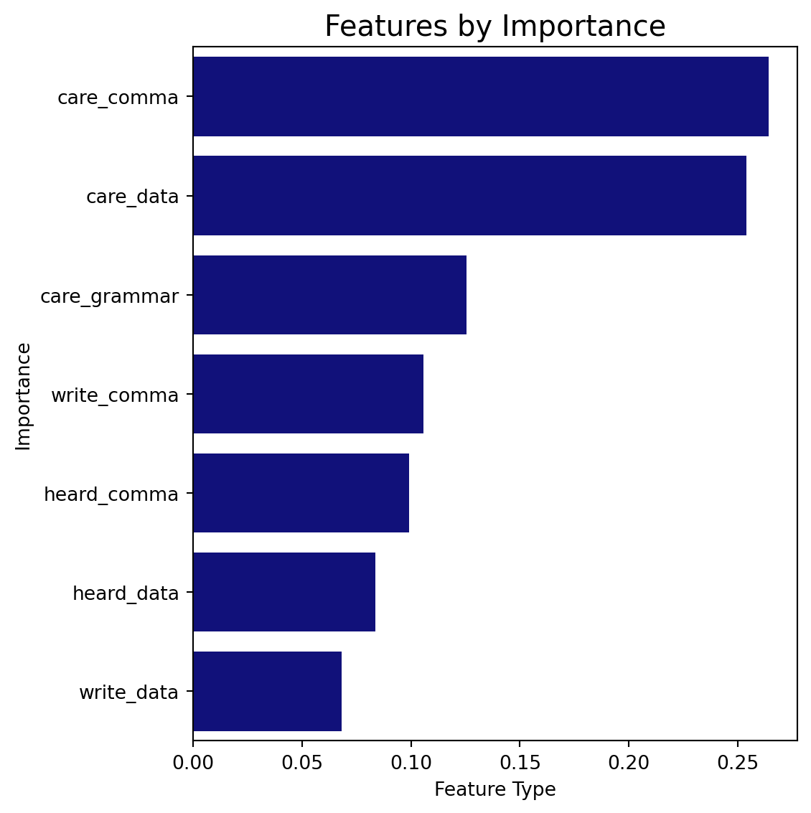
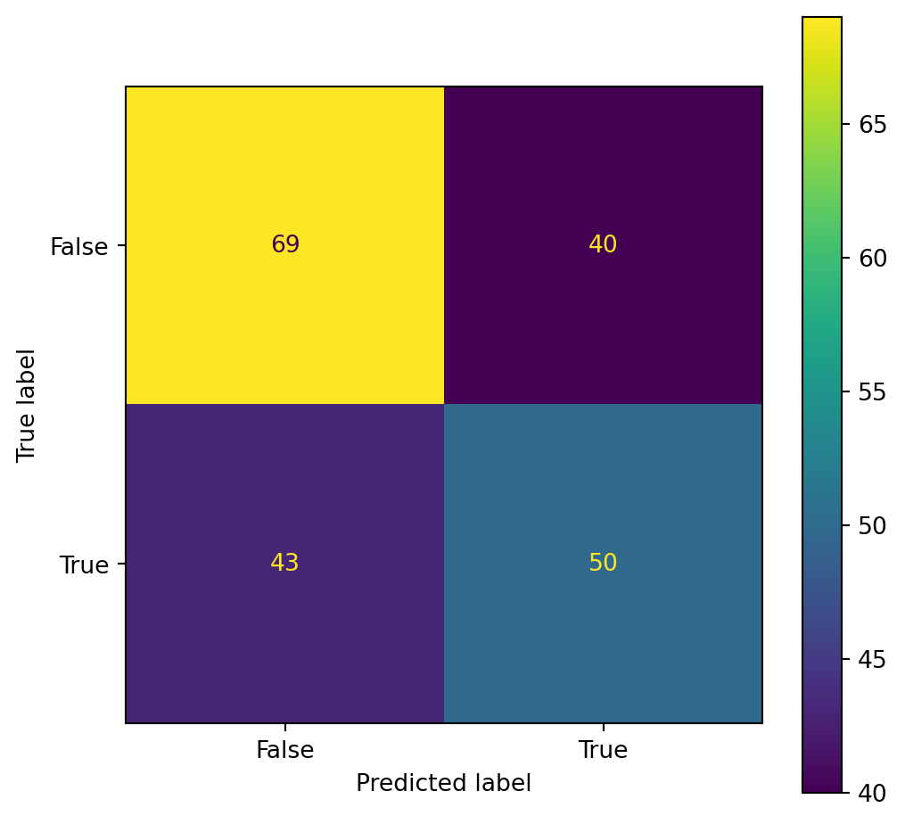

Understanding ML Metrics with the RandomForestClassifier
Fit a Classification Model
Classification models are very useful in data science. In certain limited capacities, we can use them to speed up and sometimes automate decision making. Many fraud prevention companies use classification models to predict if fraud has occurred. The following model will look at punctuation thoughts and opinion data from a 538 Survey to predict gender.
Note: the following model by design is not very good. This is understandable since the data is how one uses punctuation. This is merely for explanations.
Step 1: Import Libraries
Code
# IMPORTSimport matplotlib.pyplot as pltimport numpy as npimport pandas as pdimport seaborn as snsfrom sklearn import metricsfrom sklearn.ensemble import RandomForestClassifierfrom sklearn.metrics import accuracy_scorefrom sklearn.model_selection import train_test_split
Step 2: Read in Data
Code
# READ IN DATAraw_comma = pd.read_csv('https://raw.githubusercontent.com/fivethirtyeight/data/master/comma-survey/comma-survey.csv', skiprows=1, header=None)raw_comma.head(1)
0
1
2
3
4
5
6
7
8
9
10
11
12
0
3292953864
It's important for a person to be honest, kind...
Yes
Some
Some experts say it's important to drink milk,...
No
Not much
Somewhat important
Male
30-44
$50,000 - $99,999
Bachelor degree
South Atlantic
Step 3: Wrangle Data
Code
# SELECT AND RENAME COLUMNScomma = (raw_comma .dropna(subset = [8]) .drop([0,9,10,11,12], axis=1) .rename(columns = {1:'write_comma',2:'heard_comma',3:'care_comma',4:'write_data',5:'heard_data',6:'care_data',7:'care_grammar',8:'gender', }))# RECODE VALUES FOR MODELINGdef yn_recode(input):ifinput=="Yes": return1elifinput=="No": return-1else: return np.nandef scale_recode(input):ifinput=="A lot"orinput=="Very important" : return2elifinput=="Some"orinput=="Somewhat important": return1elifinput=="Not much"orinput=="Somewhat unimportant": return-1elifinput=="Not at all"orinput=="Very unimportant": return-2else: return np.nandef write_comma_recode(input):ifinput=="It's important for a person to be honest, kind, and loyal.": return1elifinput=="It's important for a person to be honest, kind and loyal.": return-1else: return np.nandef write_data_recode(input):ifinput=="Some experts say it's important to drink milk, but the data are inconclusive.": return1elifinput=="Some experts say it's important to drink milk, but the data is inconclusive.": return-1else: return np.nanfor i in ['care_comma','care_data','care_grammar']: comma[i] = comma[i].apply(scale_recode)for i in ['heard_comma','heard_data']: comma[i] = comma[i].apply(yn_recode)comma["write_comma"] = comma["write_comma"].apply(write_comma_recode)comma["write_data"] = comma["write_data"].apply(write_data_recode)# REMOVE NA'Sml_comma = comma.dropna().reset_index(drop =True)
Step 4: Model Data
Code
# SET FILTERED VARIABLES X_pred = ml_comma.drop(columns = ['gender'])y_pred = ml_comma['gender'] =='Male'# SPLIT VARIABLESX_train, X_test, y_train, y_test = train_test_split(X_pred,y_pred,test_size=.2,random_state =1)# CREATE FITTED MODEL WITH TRAINING DATAclf = RandomForestClassifier(random_state=1).fit(X_train, y_train)# TEST MODEL AND REPORT ACCURACYy_pred = clf.predict(X_test)y_probs = clf.predict_proba(X_test)
Step 5: Model Metrics
Code
# GIVE FEATURE IMPORTANCEfeature_raw = pd.DataFrame( {'features': X_train.columns, 'importance': clf.feature_importances_})feature_df = (feature_raw .sort_values(['importance'], ascending=False) .head(12) .reset_index(drop=True) )#MAKE PLOT FOR MOST IMPORTANT FEATURESf, ax = plt.subplots()sns.barplot(x="importance", y="features", data=feature_df, color ='darkblue')ax.set_ylabel('Importance', fontsize =10)ax.set_xlabel('Feature Type', fontsize =10)ax.set_title('Features by Importance', fontsize =15)plt.tight_layout()plt.show()print(metrics.confusion_matrix(y_test, y_pred))matrixpng_raw = metrics.plot_confusion_matrix(clf, X_test, y_test)plt.show()

[[69 40]
[43 50]]
C:\Users\Aj\AppData\Local\Programs\Python\Python310\lib\site-packages\sklearn\utils\deprecation.py:87: FutureWarning: Function plot_confusion_matrix is deprecated; Function `plot_confusion_matrix` is deprecated in 1.0 and will be removed in 1.2. Use one of the class methods: ConfusionMatrixDisplay.from_predictions or ConfusionMatrixDisplay.from_estimator.
warnings.warn(msg, category=FutureWarning)

Describe Classification Models
Confusion matrix array
The confusion matrix shows all the combinations of the following:
The prediction on a row of data
The actual state of the row of data
There are four types of general labels from the confusion matrix:
If the prediction is TRUE, and the classification is correct, then this is a TRUE POSITIVE.
If the prediction is TRUE, and the classification is not correct, then this is a FALSE POSITIVE.
If the prediction is FALSE, and the classification is correct, then this is a TRUE NEGATIVE.
If the prediction is FALSE, and the classification is not correct, then this is a FALSE NEGATIVE.
The following array describes the confusion matrix values. The left and right columns describe whether or not the classification has been predicted TRUE or FALSE. The top and bottom rows describe the actual or true state of the data.
metrics.confusion_matrix(y_test, y_pred)# queries first row, then columnTN = metrics.confusion_matrix(y_test, y_pred)[0][0] FP = metrics.confusion_matrix(y_test, y_pred)[0][1]FN = metrics.confusion_matrix(y_test, y_pred)[1][0]TP = metrics.confusion_matrix(y_test, y_pred)[1][1]
Accuracy, Sensitivity, and Specificity
Accuracy describes how many correct predictions / how many total predictions. If the dataset is pretty even, this can be a very useful metric. This, however, may not be the case with all datasets. For example, if 95 percent of all data rows should be predicted negative, a model that only spits out negatives will be 95 percent accurate.
There’s a joke in machine learning: The professor says that he developed a model that predicts whether or not someone is a terrorist with over 99 percent accuracy. The students are perplexed and ask the professor to show them the model. The professor shows the following model: f(x) = 0. Since over 99 percent of people are NOT terrorists, just saying FALSE will be accurate over 99 percent of the time.
If we actually wanted to see how good this model is at identifying terrorists, we will need a different metric:
Sensitivity is like accuracy, but just for data that should be classified as positive. Sensitivity is calculated by correctly predicted positives / all actual positives. In the terrorist example, the numerator is how many terrorists were correctly identified, and the denominator is the total amount of terrorists. The sensitivity for the terrorist example would be zero percent because out of all terrorists, none of them were correctly identified.
Specificity is like accuracy, but just for data that should be classified as negative. Specificity is calculated by correctly predicted negatives / all actual negatives. In the terrorist example, the numerator is how many non-terrorists were correctly identified, and the denominator is the total amount of non-terrorists. The specificity for the terrorist example would be 100 percent since all non-terrorists were predicted to be non-terrorists.
Accuracy for the Model The following code will calculate the accuracy for the model. The accuracy for the model is calculated by correctly predicted rows / all rows. More concretely, this is calculated by (correctly predicted males + correctly predicted females) / (all males and females)
Sensitivity and Specificity for the Model The following code will calculate the sensitivity and specificity for the model. The sensitivity is calculated by males predicted correctly / all males. The specificity is calculated by females predicted correctly / all females. The reason why male is sensitivity and female is specificity is that in the code, male is coded in such a way that males are 1 (TRUE) and non-males (females) are 0 (FALSE). This is just for math.
Since specificity is higher, this means that the accuracy for females is higher than males.
The ROC Curve
The unseen function produced by fitting the model will output some number to determine if we should classify the row as a male or female. Since Males are TRUE/1 and Females are FALSE/0, a number is output between 0 and 1 to predict the gender of the row of data. For example, if the outputed number is .9, the gender of the row is probably male. Conversely, if the outputed number is .1, the gender of the row is probably female.
The threshold here is .5- meaning that if the output is greater than the threshold, we classify the row as a male, but if the output is less than the threshold, we classify the row as a female.
If we were to increase the threshold to .6, this means that we are more likely to correctly predict females- BUT we are more likely to incorrectly guess males- since males will now have a more demanding threshold to reach. This will increase Specificity since females are assigned FALSE/0.
The ROC curve is used to visually see what happens when we set the threshold for prediction to prioritize sensitivity or specificity.
On the following graph, we will see two measurements: True Positve Rate and False Positve Rate.
C:\Users\Aj\AppData\Local\Programs\Python\Python310\lib\site-packages\sklearn\utils\deprecation.py:87: FutureWarning: Function plot_roc_curve is deprecated; Function :func:`plot_roc_curve` is deprecated in 1.0 and will be removed in 1.2. Use one of the class methods: :meth:`sklearn.metric.RocCurveDisplay.from_predictions` or :meth:`sklearn.metric.RocCurveDisplay.from_estimator`.
warnings.warn(msg, category=FutureWarning)